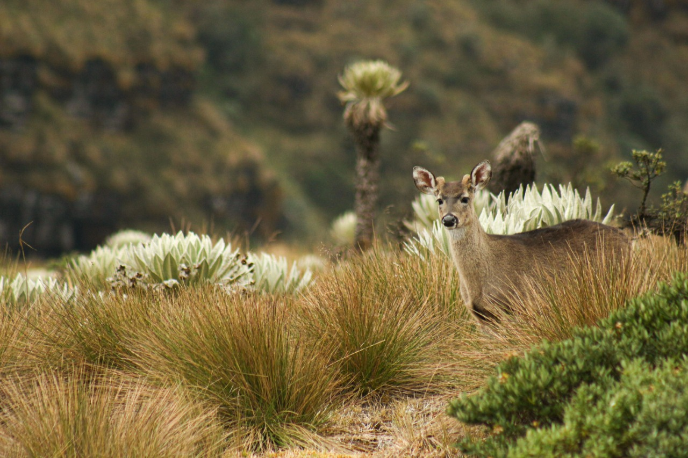
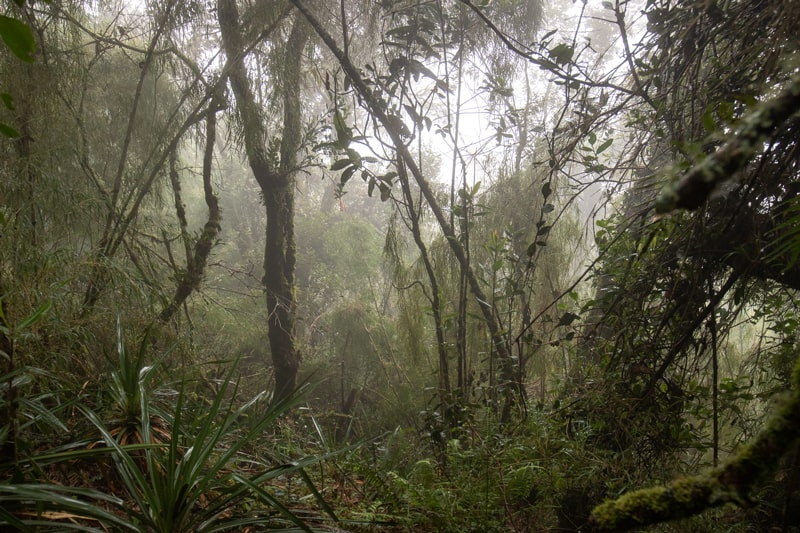
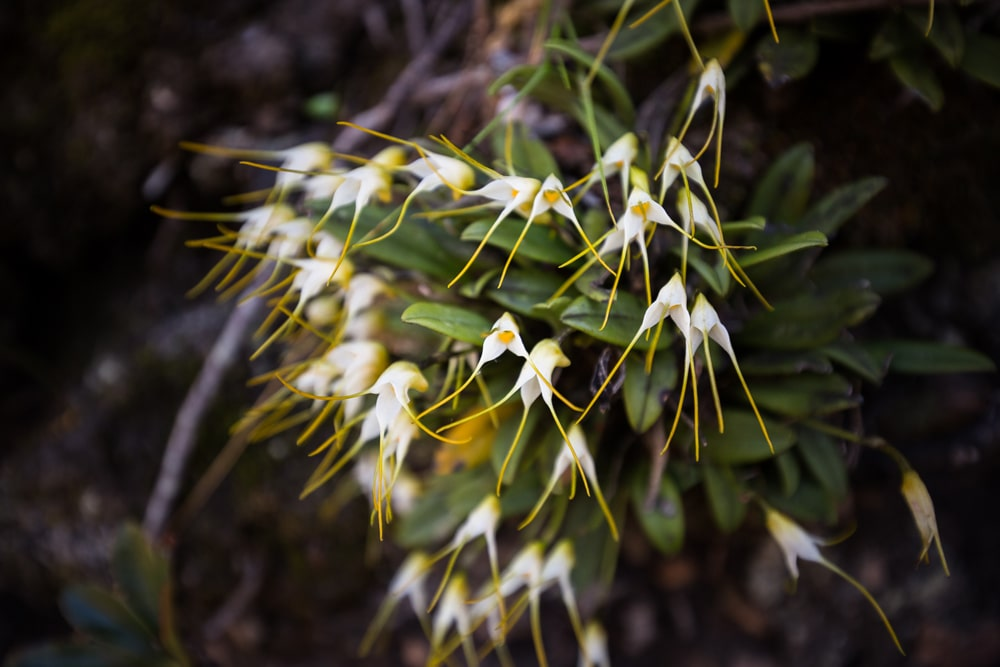
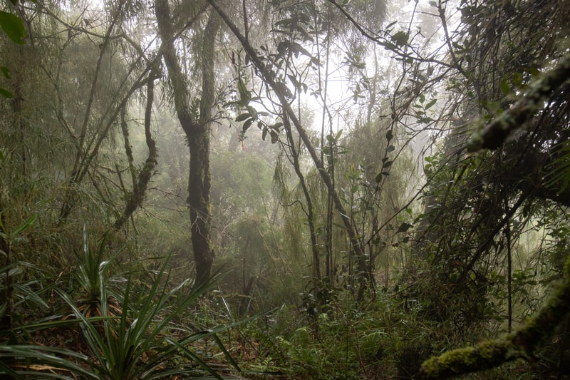
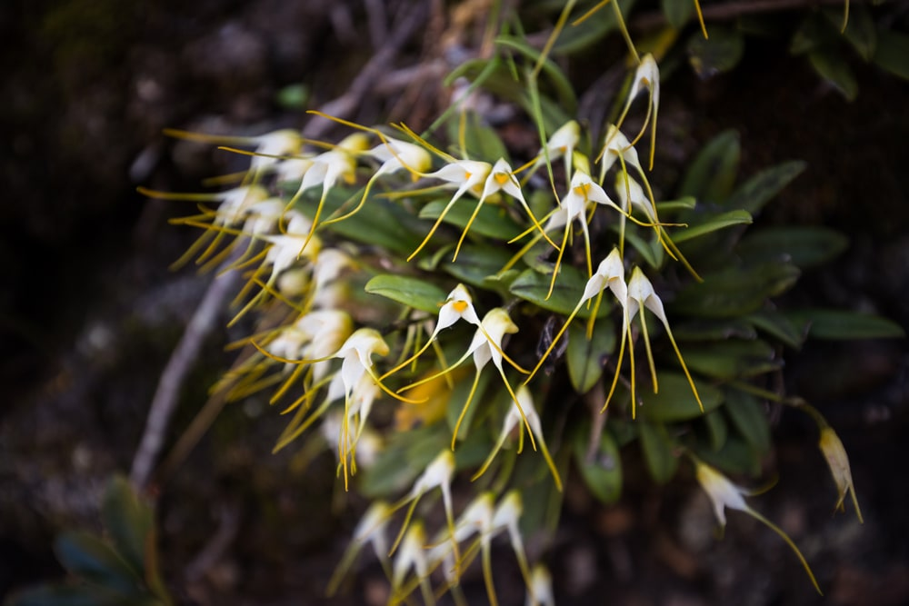

Noticias

Cundinamarca, un espacio de biodiversidad en el centro de Colombia

Para la Corporación Autónoma Regional de Boyacá...
Leer más
Publicado el: 13/06/2024
Corpoboyacá trabaja por la protección de la biodiversidad
Galeria de imagenes
 


